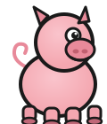
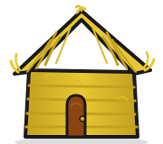
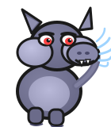
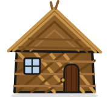

← Gallery
Scroll down to follow the road ↓
The Three Little Pigs
Scroll down the road to follow the story

Once upon a time, three little pigs set out into the world to build homes of their own.

The first pig was in a hurry. He built a house of straw — done in an afternoon!

But the Big Bad Wolf came huffing and puffing. One great breath, and the straw house was gone.

The second pig built with sticks — sturdier, he thought. Surely that would do.
The wolf huffed again. The stick house shuddered… and collapsed in a heap.
But the third pig had been patient. Brick by brick, she built something that would last.
The wolf blew until he turned blue. He huffed and he puffed — but the brick house stood firm.
All three little pigs were safe inside, warm and together. And the wolf never came back. 🐷🐷🐷
The End
And they all lived happily ever after.
🐷 🐷 🐷